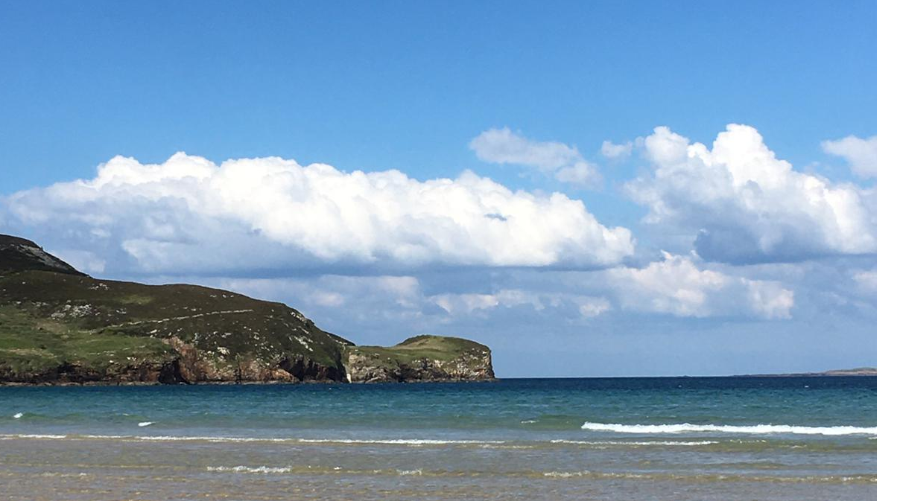

A map of the North Atlantic off the Donegal Coast, with pop-ups detailing various species observed at different locations.
This is World Ocean Day, and seeing as this time of year always finds us on the Donegal Coast, looking out over the North Atlantic, it seemed like a good time for a blog post.

This place is rife with wildlife, with a strong emphasis on bio-diversity, so I wanted that to feature in the post as well. Thus the idea became to produce a map showing observations of different species in the area.
For this, there is no better place than the Global Biodiversity Information Facility. The r package rgbif links directly to this, with the function occ_search doing the heavy lifting. The function can be spatially limited to a bounding box, we picked an area of about 20,000 km2. off the North and West Donegal coast. This is shown in the first code chunk below:
bounds <- c('55.4045 -10.4181',
'54.2264 -10.4205',
'54.2433 -8.4768',
'54.5967 -8.1391',
'54.6907 -8.7753',
'55.1823 -8.1036',
'55.2986 -7.0557',
'55.4798 -7.3945')
wkt <- glue::glue(
"POLYGON(({bounds[1]},
{bounds[2]},
{bounds[3]},
{bounds[4]},
{bounds[5]},
{bounds[6]},
{bounds[7]},
{bounds[8]},
{bounds[1]}))"
)
species_observations <- occ_search(geometry = wkt)$data %>%
select(-key) %>%
distinct() %>%
mutate(sciname = str_remove(acceptedScientificName, "\\([^()]*\\)"),
sciname = str_remove(sciname, "[^A-Z][A-Z][^q]*"),
sciname = str_trim(sciname),
date = strftime(eventDate, format = "%d %B %Y"))
| Species | longitude | latitude | date |
|---|---|---|---|
| Puffinus bailloni (Bonaparte, 1857) | -7.522000 | 55.33000 | 17 February 2020 |
| Phaethon lepturus Daudin, 1802 | -7.522000 | 55.33000 | 17 February 2020 |
| Puffinus pacificus (Gmelin, 1789) | -7.630240 | 55.47330 | 04 December 2017 |
| Coryphaena hippurus Linnaeus, 1758 | -9.850140 | 54.40014 | 25 April 2013 |
| Aluterus monoceros (Linnaeus, 1758) | -9.850140 | 54.40014 | 25 April 2013 |
| Canthidermis maculata (Bloch, 1786) | -9.850140 | 54.40014 | 25 April 2013 |
| Carcharhinus falciformis (Müller & Henle, 1839) | -9.850140 | 54.40014 | 25 April 2013 |
| Elagatis bipinnulata (Quoy & Gaimard, 1825) | -9.850140 | 54.40014 | 25 April 2013 |
| Acanthocybium solandri (Cuvier, 1832) | -9.850140 | 54.40014 | 25 April 2013 |
| Coryphaena hippurus Linnaeus, 1758 | -9.266806 | 54.61680 | 28 April 2013 |
| Sphyraena barracuda (Edwards, 1771) | -9.266806 | 54.61680 | 28 April 2013 |
| Elagatis bipinnulata (Quoy & Gaimard, 1825) | -9.266806 | 54.61680 | 28 April 2013 |
| Acanthocybium solandri (Cuvier, 1832) | -9.266806 | 54.61680 | 28 April 2013 |
| Uraspis secunda (Poey, 1860) | -9.216805 | 54.31680 | 26 April 2012 |
| Canthidermis maculata (Bloch, 1786) | -9.216805 | 54.31680 | 26 April 2012 |
| Caretta caretta (Linnaeus, 1758) | -8.556530 | 54.39290 | 08 May 2011 |
| Caretta caretta (Linnaeus, 1758) | -8.500850 | 54.40074 | 08 May 2011 |
| Caretta caretta (Linnaeus, 1758) | -8.540150 | 54.37861 | 08 May 2011 |
| Caretta caretta (Linnaeus, 1758) | -8.541860 | 54.37899 | 08 May 2011 |
| Caretta caretta (Linnaeus, 1758) | -8.554230 | 54.39298 | 08 May 2011 |
| Caretta caretta (Linnaeus, 1758) | -10.260960 | 54.32670 | 03 May 2011 |
| Caretta caretta (Linnaeus, 1758) | -10.379740 | 54.41201 | 03 May 2011 |
| Caretta caretta (Linnaeus, 1758) | -10.377480 | 54.42170 | 03 May 2011 |
| Caretta caretta (Linnaeus, 1758) | -10.283770 | 54.40229 | 03 May 2011 |
| Caretta caretta (Linnaeus, 1758) | -10.386200 | 54.44261 | 03 May 2011 |
| Caretta caretta (Linnaeus, 1758) | -9.627830 | 54.42259 | 05 May 2011 |
| Caretta caretta (Linnaeus, 1758) | -9.645710 | 54.40990 | 05 May 2011 |
| Caretta caretta (Linnaeus, 1758) | -9.782440 | 54.41589 | 05 May 2011 |
| Caretta caretta (Linnaeus, 1758) | -9.785720 | 54.41016 | 05 May 2011 |
| Caretta caretta (Linnaeus, 1758) | -8.602510 | 54.39647 | 08 May 2011 |
| Caretta caretta (Linnaeus, 1758) | -8.621440 | 54.39744 | 08 May 2011 |
| Caretta caretta (Linnaeus, 1758) | -8.624210 | 54.40755 | 08 May 2011 |
| Caretta caretta (Linnaeus, 1758) | -8.643130 | 54.39529 | 08 May 2011 |
| Caretta caretta (Linnaeus, 1758) | -8.703760 | 54.32497 | 07 May 2011 |
| Caretta caretta (Linnaeus, 1758) | -8.638080 | 54.39200 | 08 May 2011 |
| Caretta caretta (Linnaeus, 1758) | -9.075270 | 54.42868 | 06 May 2011 |
| Caretta caretta (Linnaeus, 1758) | -9.088690 | 54.43781 | 06 May 2011 |
| Caretta caretta (Linnaeus, 1758) | -8.588270 | 54.39122 | 08 May 2011 |
| Caretta caretta (Linnaeus, 1758) | -8.567130 | 54.38071 | 08 May 2011 |
| Caretta caretta (Linnaeus, 1758) | -9.232940 | 54.45467 | 06 May 2011 |
| Caretta caretta (Linnaeus, 1758) | -9.288500 | 54.45316 | 06 May 2011 |
| Caretta caretta (Linnaeus, 1758) | -9.303040 | 54.47156 | 06 May 2011 |
| Caretta caretta (Linnaeus, 1758) | -9.310510 | 54.45819 | 06 May 2011 |
| Caretta caretta (Linnaeus, 1758) | -9.595710 | 54.43569 | 05 May 2011 |
| Caretta caretta (Linnaeus, 1758) | -9.297480 | 54.47985 | 06 May 2011 |
| Caretta caretta (Linnaeus, 1758) | -9.589590 | 54.43498 | 05 May 2011 |
| Caretta caretta (Linnaeus, 1758) | -9.092280 | 54.42542 | 06 May 2011 |
| Caretta caretta (Linnaeus, 1758) | -9.133930 | 54.44247 | 06 May 2011 |
| Caretta caretta (Linnaeus, 1758) | -9.147140 | 54.43363 | 06 May 2011 |
| Laridae | -7.272760 | 55.36494 | 29 March 2010 |
| Laridae | -7.283010 | 55.34349 | 29 March 2010 |
| Laridae | -7.279960 | 55.34931 | 29 March 2010 |
| Laridae | -7.285820 | 55.33851 | 29 March 2010 |
| Laridae | -7.290610 | 55.33140 | 29 March 2010 |
| Laridae | -7.271480 | 55.36757 | 29 March 2010 |
| Laridae | -7.279140 | 55.35100 | 29 March 2010 |
| Laridae | -7.256800 | 55.39631 | 01 April 2010 |
| Laridae | -7.281310 | 55.35083 | 01 April 2010 |
| Fregata Lacepede, 1799 | -7.287990 | 55.33856 | 01 April 2010 |
| Eretmochelys imbricata (Linnaeus, 1766) | -8.500000 | 54.50000 | 06 August 2010 |
| Chelonia mydas (Linnaeus, 1758) | -7.783472 | 55.31680 | 09 April 2007 |
| Sphyraena barracuda (Edwards, 1771) | -7.783472 | 55.31680 | 09 April 2007 |
| Carcharhinus falciformis (Müller & Henle, 1839) | -7.683472 | 55.28347 | 09 April 2007 |
| Kajikia audax (Philippi, 1887) | -7.683472 | 55.28347 | 09 April 2007 |
| Carcharhinus falciformis (Müller & Henle, 1839) | -7.466805 | 55.31680 | 09 April 2007 |
| Balaenoptera physalus (Linnaeus, 1758) | -7.466805 | 55.31680 | 09 April 2007 |
| Paracaesio xanthura (Bleeker, 1869) | -9.500000 | 55.00000 | 01 October 1987 |
| Conger cinereus Rüppell, 1830 | -9.500000 | 55.00000 | 01 October 1987 |
| Rudgea viburnoides (Cham.) Benth. | -9.583333 | 54.91667 | 19 April 1983 |
| Thunnus albacares (Bonnaterre, 1788) | -7.218047 | 55.28505 | 23 January 1974 |
| Thunnus obesus (Lowe, 1839) | -7.218047 | 55.28505 | 23 January 1974 |
| Dasyatis Rafinesque, 1810 | -7.218047 | 55.28505 | 23 January 1974 |
| Alopias vulpinus (Bonnaterre, 1788) | -7.218047 | 55.28505 | 23 January 1974 |
| Alepisaurus ferox Lowe, 1833 | -7.218047 | 55.28505 | 23 January 1974 |
| Thunnus albacares (Bonnaterre, 1788) | -7.318617 | 55.35211 | 25 January 1974 |
| Thunnus obesus (Lowe, 1839) | -7.318617 | 55.35211 | 25 January 1974 |
| Dasyatis Rafinesque, 1810 | -7.318617 | 55.35211 | 25 January 1974 |
| Carcharhinus longimanus (Poey, 1861) | -7.318617 | 55.35211 | 25 January 1974 |
| Thunnus obesus (Lowe, 1839) | -7.452750 | 55.40240 | 26 January 1974 |
| Prionace glauca (Linnaeus, 1758) | -7.452750 | 55.40240 | 26 January 1974 |
| Alepisaurus ferox Lowe, 1833 | -7.452750 | 55.40240 | 26 January 1974 |
| Cyclothone Goode & Bean, 1883 | -8.700000 | 55.11670 | 11 February 1964 |
| Gonostomatidae | -8.700000 | 55.11670 | 11 February 1964 |
| Nemesis lamna lamna | -8.700000 | 55.12000 | 17 February 1964 |
| Dinemoura latifolia (Steenstrup & Lütken, 1861) | -8.700000 | 55.12000 | 17 February 1964 |
| Amphipoda | -8.700000 | 55.12000 | 17 February 1964 |
| Physeter macrocephalus Linnaeus, 1758 | -10.324640 | 54.36641 | 01 January 1913 |
| Physeter macrocephalus Linnaeus, 1758 | -8.369530 | 55.25718 | 01 January 1913 |
| Dagetichthys Stauch & Blanc, 1964 | -10.000000 | 55.00000 | 01 January 1770 |
| Pseudocycnus appendiculatus Heller, 1865 | -8.920000 | 55.13000 | NA |
| Gloiopotes watsoni Kirtisinghe, 1934 | -8.920000 | 55.13000 | NA |
| Pandarus satyrus Dana, 1849 | -8.920000 | 55.13000 | NA |
The scientific species names are a little obscure, I’d like to map them to more familiar names. That’s where the package taxize comes in. It can map the scientific names of species to their common names via the function sci2comm. But first we need to remove the information in parentheses for each observation, e.g (Gmelin, 1789), that gives the naturalist and date of the species’ classification.
species_observations <- species_observations %>%
select(Species = acceptedScientificName,
longitude = decimalLatitude, # note how rgbif mixes up long and lat
latitude = decimalLongitude, # note how rgbif mixes up long and lat
phylum,
order,
family,
genus,
eventDate) %>%
distinct() %>%
mutate(sciname = str_remove(Species, "\\([^()]*\\)"),
sciname = str_remove(sciname, "[^A-Z][A-Z][^q]*"),
sciname = str_trim(sciname))
Now we can run the mapping to the species’ common name.
# species_observations$commonname <- sci2comm(species_observations$sciname)
# species_observations <- species_observations %>%
# mutate(commonname = unlist(commonname))
species_observations <- readRDS(file = "data/gbif")
Let’s follow this up by making some neater labels for the map’s pop-ups:
species_observations <- species_observations %>%
select(commonname, everything()) %>%
mutate(commonname = ifelse(commonname == "character(0)", sciname, commonname),
commonname = str_to_title(commonname),
genus = ifelse(is.na(genus), "", glue::glue("{genus}<br>")),
family = ifelse(is.na(family), "", glue::glue("{family}<br>")))
And now, let’s draw our map, colouring the points by the year of observation. Seeing as we’re talking about the ocean here, I thought a bathyscape map would be best, hence the addProviderTiles(providers$Esri.OceanBasemap) line.
pal <- colorNumeric("Reds", domain=(species_observations$year))
species_observations %>%
leaflet() %>%
addProviderTiles(providers$Esri.OceanBasemap) %>%
setView(lng=-8.5, lat=54.8, zoom=7.2) %>%
addCircleMarkers(lng = ~ decimalLatitude, # note how rgbif mixes up long and lat
lat = ~ decimalLongitude,# note how rgbif mixes up long and lat
popup = ~paste("<b>", {commonname}, "</b><br>",
phylum, "<br>",
order, "<br>",
family,
genus,
strftime(species_observations$eventDate,
format = "%d %B %Y")),
color = ~pal(year),
radius = 5)
See if you can find the two whales, one off Malin and the second off Belmullet, and the Portugeese sole from the 18th century.
Now, time for some watersports….
If you see mistakes or want to suggest changes, please create an issue on the source repository.
Text and figures are licensed under Creative Commons Attribution CC BY 4.0. Source code is available at https://github.com/eugene100hickey/fizzics, unless otherwise noted. The figures that have been reused from other sources don't fall under this license and can be recognized by a note in their caption: "Figure from ...".
For attribution, please cite this work as
Eugene (2021, June 8). Euge: World Ocean Day. Retrieved from https://www.fizzics.ie/posts/2021-06-12-world-ocean-day/
BibTeX citation
@misc{eugene2021world,
author = {Eugene, },
title = {Euge: World Ocean Day},
url = {https://www.fizzics.ie/posts/2021-06-12-world-ocean-day/},
year = {2021}
}